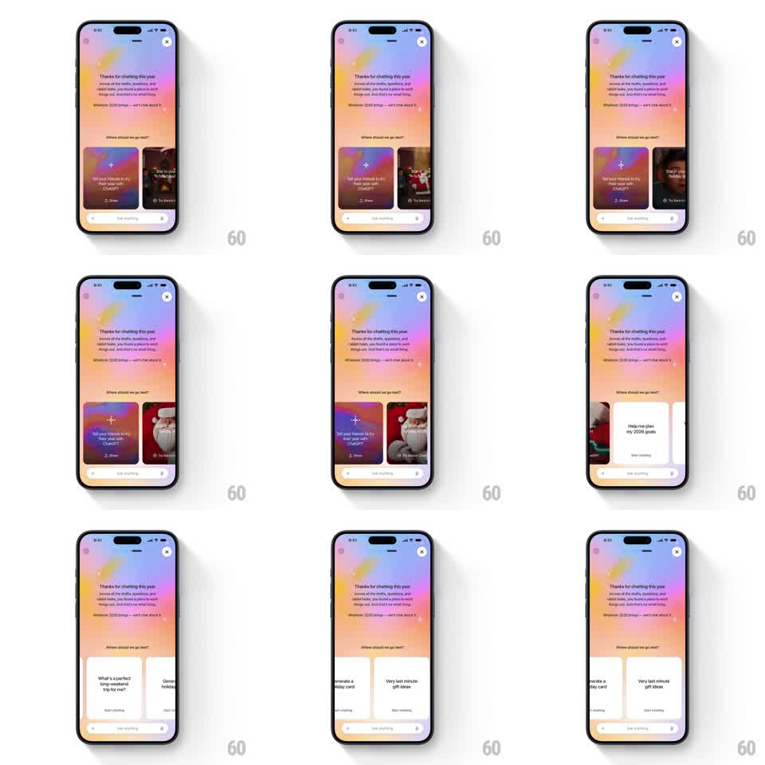

Media
Frame-by-frame

Rebuild this interaction 1:1: ChatGPT's year-review outro - a horizontal carousel of next-step cards ("Help me plan my 2026 goals", "What's a perfect long-weekend trip for me?") that swipes with springy snap physics over the pastel thank-you sheet.

Rebuild this interaction 1:1: ChatGPT's year-review outro - a horizontal carousel of next-step cards ("Help me plan my 2026 goals", "What's a perfect long-weekend trip for me?") that swipes with springy snap physics over the pastel thank-you sheet.
## Integration
Integration: stack-agnostic spec - springs given as stiffness/damping, timed motions as duration + curve; map every value to your framework and animation library of choice.
## Scene
ChatGPT sheet, soft pastel gradient (pink-orange-blue): "Thanks for chatting this year" + reflection copy, "Where should we go next?", then a horizontal row of tall suggestion cards (gradient and photo faces, each with a prompt and a "Start chatting" pill), an "Ask anything" input pinned at the bottom, and a close X.
## Motion spec
Pattern: springy swipe-and-snap card carousel.
- Drag: cards track the finger 1:1 horizontally with a slight rotation on the lead card (up to +/-2deg, velocity-proportional) and the row's neighbors parallax-lag by 8px.
- Release: the row snaps to the nearest card with a spring (~280/18) - a clear settle overshoot of ~6px; flick gestures skip one card per flick, never more.
- The leaving card dims to 70% and scales 0.96 as it exits center; the arriving card restores - a quiet focus handoff.
- Cards peek ~24px from both edges at rest so the row reads as scrollable.
- On entry the row slides in from the right as a group (translateX 60 -> 0, 350ms ease-out, cards staggered 60ms) after the header copy fades up.
- Tapping a card's "Start chatting" pill lifts the card (scale 1 -> 1.03, 150ms) before the navigation fires.
## Calibration
- Snap is to card centers - never between cards; the resting alignment is exact every time.
- Card faces vary: soft gradients and photo treatments; the type stays white and bottom-left.
## Reduced motion
Swipe paging without rotation/parallax; snap uses a 250ms ease.
## Don't miss
- The pastel header, copy, and Ask-anything input stay fixed - only the card row moves.
- The gradient background breathes almost imperceptibly (hue drift +/-4deg, 8s) behind everything.